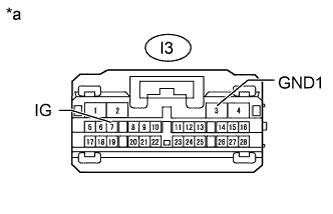

DTC C1612 IG Voltage is Low or High |
| DTC Code | DTC Detection Condition | Trouble Area |
| C1612 |
|
|
| 1.READ VALUE USING INTELLIGENT TESTER |
Connect the intelligent tester to the DLC3.
Turn the engine switch on (IG).
Turn the intelligent tester on.
Enter the following menus: Chassis / Parking Assist Monitor System / Data List.
Check the Data List for proper functioning of the following items.
| Tester Display | Measurement Item/Range | Normal Condition | Diagnostic Note |
| IG Voltage Low Status | IG voltage input to parking assist ECU/OK or NG | OK: IG voltage is normal NG: IG voltage is abnormal (too low) | - |
| IG Voltage High Status | IG voltage input to parking assist ECU/OK or NG | OK: IG voltage is normal NG: IG voltage is abnormal (too high) | - |
| Result | Proceed to |
| OK is displayed for both items | A |
| NG is displayed for either item | B |
|
| ||||
| A | ||
| ||
| 2.CHECK HARNESS AND CONNECTOR (PARKING ASSIST ECU IG VOLTAGE) |
|  |
Disconnect the I3 parking assist ECU connector.
Measure the voltage according to the value(s) in the table below.
| Tester Connection | Switch Condition | Specified Condition |
| I3-7 (IG) - I3-3 (GND1) | Engine switch on (IG) | 11 to 14 V |
| *a | Front view of wire harness connector (to Parking Assist ECU) |
|
| ||||
| OK | ||
| ||